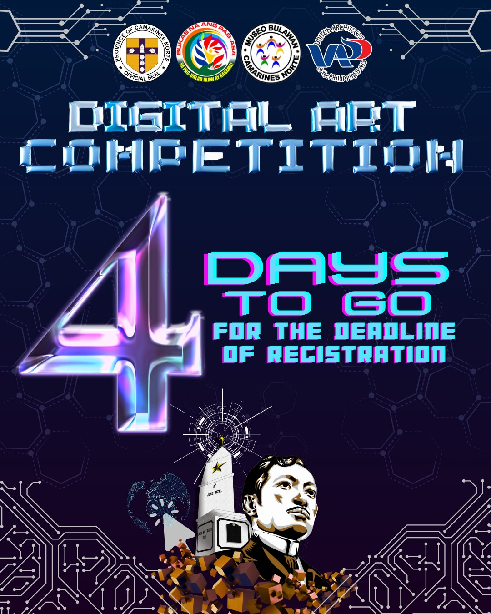

Daet's 𝓚𝓪𝓵𝓮𝓼𝓪 has a distinct design, and not patterned after the ones gracing the Intramuros streets. Its design is akin to the good ol' Pinoy passenger jeepney prototype we are used to seeing.
If this is not charming enough, San Isidro, Daet has a 𝗞𝗮𝗹𝗲𝘀𝗮 𝗙𝗲𝘀𝘁𝗶𝘃𝗮𝗹 to honor and preserve the cultural heritage associated with the kalesa, a horse-drawn carriage that was commonly used during the Spanish colonial era. During the festival, beautifully decorated kalesas are paraded through the streets, accompanied by lively music, dance performances, and other cultural activities.
Daet kalesa may not be as road-famous as it was, it is still being used today to travel people from the metro of Daet to San Isidro, Daet. Thus, bringing about it a whiff of nostalgia and elegance as they join the modern transportation means on the road.

Step into the realm of artistic expression and pay homage to the legacy of our National Hero by joining the 𝐃𝐈𝐆𝐈𝐓𝐀𝐋 𝐀𝐑𝐓 𝐂𝐎𝐌𝐏𝐄𝐓𝐈𝐓𝐈𝐎𝐍, a groundbreaking event scheduled for December 19, 2023, at the Camarines Norte Provincial Library. This competition serves as a testament to the enduring impact of Dr. Jose Rizal's ideals, inviting artists to weave their creative narratives in the digital medium.
Join us in this remarkable journey of artistic expression, as we bridge the past and the present through the lens of digital art, commemorating the enduring spirit of Dr. Jose Rizal and the monumental milestones that shape our nation's history.
𝐢𝐓𝐀𝐆 𝐦𝐨 𝐧𝐚 𝐚𝐧𝐠 𝐃𝐄𝐒𝐄𝐑𝐕𝐄 𝐧𝐠 𝐍𝐎𝐂𝐇𝐄 𝐁𝐔𝐄𝐍𝐀 𝐏𝐀𝐂𝐊𝐀𝐆𝐄!
𝗣𝗮𝘀𝗸𝘂𝗵𝗮𝗻 𝟮𝟬𝟮𝟯; 𝗕𝘂𝗸𝗮𝘀 𝗻𝗮 𝗻𝗮𝗴 𝗣𝗮𝗴-𝗮𝘀𝗮 𝘀𝗮 𝗖𝗮𝗺𝗮𝗿𝗶𝗻𝗲𝘀 𝗡𝗼𝗿𝘁𝗲!
𝗔 𝘃𝗶𝗿𝘁𝘂𝗮𝗹 𝗰𝗮𝗿𝗼𝗹𝗶𝗻𝗴 𝗳𝗼𝗿 𝗮 𝗰𝗮𝘂𝘀𝗲!
Isang napakagandang regalo ngayong Kapaskuhan ang pagbabahagi sa ating pamilya, kaibigan at kapwa, ngayong Holiday season ipadama ang tunay na diwa ng pasko, mag bigay ngiti sa mga espesyal na tao sa inyong buhay, punuin ang bawat puso at tahanan ng kagalakan at pag mamahalan.
Kaya sa pamaskong handog ng Camarines Norte Provincial Information Office sa pangunguna ni Gov.Dong Padilla at Vice Governor Joseph Ascutia ay may pagkakataong manalo ng Noche Buena Package at mabigyan ng Liwanag at masagang pasko ang isang espesyal na tao sa inyong buhay.
𝐓𝐈𝐍𝐆𝐍𝐀𝐍: 𝐍𝐆𝐀𝐘𝐎𝐍𝐆 𝐀𝐑𝐀𝐖 𝐍𝐀 𝐀𝐍𝐆 𝐓𝐈𝐌𝐏𝐀𝐋𝐀𝐊 𝐁𝐈𝐆𝐊𝐀𝐒𝐀𝐍𝐆 '𝐃𝐈-𝐇𝐀𝐍𝐃𝐀!
Sa pagdiriwang ng ika-127 na Anibersaryo ng Pagka-Martir ni Gat Jose P. Rizal, at ika-125 Anibersaryo ng Pagtatayo ng Unang Bantayog ni Rizal, inaanyayahan namin kayo na saksihan NGAYONG ARAW ang paligsahan ng mga GURONG MANANALUMPATI na maglalaban-laban sa ating 𝐓𝐈𝐌𝐏𝐀𝐋𝐀𝐊 𝐁𝐈𝐆𝐊𝐀𝐒𝐀𝐍𝐆 '𝐃𝐈-𝐇𝐀𝐍𝐃𝐀 (Extemporaenous Speaking)!
𝗟𝗢𝗢𝗞 : 𝗧𝗢𝗗𝗔𝗬 𝗛𝗔𝗣𝗣𝗘𝗡𝗦 ğ— ğ—¨ğ—¦ğ—˜ğ—¢ 𝗕𝗨𝗟𝗔𝗪𝗔𝗡'𝗦 𝗢𝗥𝗔𝗧𝗢𝗥𝗜𝗖𝗔𝗟 𝗖𝗢𝗡𝗧𝗘𝗦𝗧
between the most eloquent youth orators of our province.
This is to honor Dr. Jose Rizal's passion for nationalism and verbal excellence for the National Hero's 127th Anniversary of the Martyrdom of Dr. Jose P. Rizal and 125th Anniversary of the Establishment of Rizal's First Monument in Daet, Camarines Norte.
Hinarana ang buong SM City Daet ng 21 na kalahok sa naganap na KUNDIMAN SINGING COMPETITION na pinangunahan ng Camarines Norte Provincial Library sa pamumuno ni Mr. Abel C. Icatlo, LSD-OIC.
Nagpamalas sila ng malalambing, marubdob, at matatamis na pag-awit ng Kundiman--isang nalilimutan nang sining sa ating bansa.
Ang "Kundiman" ay nagsilbing tulay ng mga sinaunang pilipino upang maipahayag ng mapayapa ang kanilang masidhing pag-aklas mula sa kapit ng mga mananakop na nang-api sa Pilipinas.
Sa pag-lipas ang panahon, nanatili ang "Kundiman" bilang isang mapanindig balahibong awiting pag-ibig--pag-ibig sa sinisinta at pati na sa Pilipinas.
Nararapat lang na panatilihin ito sa ating buhay bilang isang Pilipino. Huwag sana natin itong palitan ng makabago o banyagang awitin.
Sapagkat ang ating KULTURANG PILIPINO at KULTURANG CAMNORTEÑO ang gagabay at bubuo ng ating mga mithiin sa kasalukuyang panahon at sa darating pa.
Kulturang CamNorteño: Alamin, Mahalin, Lingapin, at Palaganapin!
A Philippine province of many names--Land of Gold and Golden Opportunities, Home to the World's First Dr. Jose P. Rizal Monument, Fish Bowl of the Philippines, and Gateway to Bicolandia--𝕮𝖆𝖒𝖆𝖗𝖎𝖓𝖊𝖘 𝕹𝖔𝖗𝖙𝖊 is an underrated sleeping giant.
It's original name, however, came from a humble beginning.
"Camarines" came from the Spanish word "camarin", which means "rice granary" or "warehouse".
On the other hand, "Norte" is also a Spanish word directly translating to "north wind" or "north".
 Museo Bulawan
Museo Bulawan